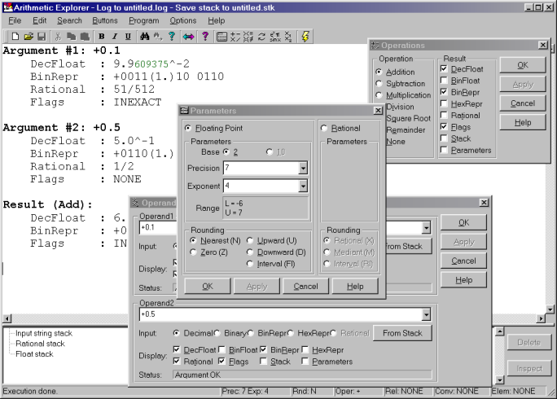

In this software environment it is possible to specify and simulate
that computations are performed, not in the hardware IEEE singles or doubles,
but in a user-defined set of floating-point numbers. By choosing a small
precision t and a limited exponent range, students can then easily
follow the computations at the bit-level. Moreover, in a low-precision
floating-point set, one can easily zoom in on the unmistakable effects
of data and rounding error, cancellation, ill-conditioning and numerical
instability and develop a better feeling for different computer arithmetic
issues. In this respect it is important to mention that the floating-point
arithmetic, as implemented in the didactical tool, fully complies with
the philosophy of the IEEE standard. Except for the fact that the precision
and exponent range can be specified freely, all aspects of the IEEE standard
are implemented and can be visualized, including exact rounding, denormals,
signed zero, infinities, not-a-numbers and exception flags to name just
a few. Hence it is possible for students to really ``discover" the full
details of floating-point arithmetic, something which is not so obvious
when other tools are used. While a similar analysis can be done by using
Mathematica or for instance by direct programming and using a traditional
compiler, the result is often a time-consuming and confusing task, obscuring
more points than one is trying to make.

For a specified set of floating-point numbers, the didactical tool provides the whole functionality described in Sections 2-6, from basic operations to complete algorithms. Moreover, interval arithmetic, where the intervals have endpoints in the user-defined set of floating-point numbers, and rational arithmetic are supported. In the future the program will include rational interval arithmetic and rational rounding for irrational numbers.
The implementation of the didactical environment was realized using C++ classes, and was developed in cooperation with the students themselves, who were fascinated by the computer arithmetic issues discussed in the course. Full use of operator overloading also enables a user, in addition to using the environment for simple expressions, to run downloaded code from within the didactical software tool, using a user-specified precision and exponent range, rather than the IEEE single or double hardware floats. It should be mentioned that, since this is a true didactical program, no attention has been paid to the efficiency of the implementation. The tool was developed in Borland C++ with a Windows interface. It is in its last debugging phase and will be available in the coming winter term.